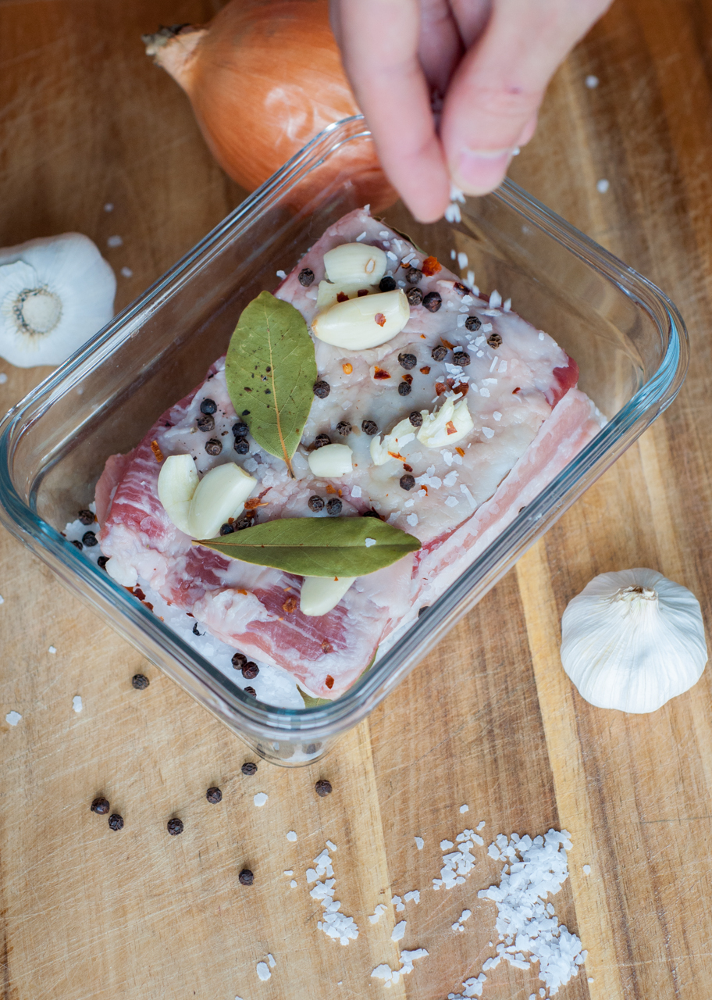

Ingredients for Salo:
-
2 lb organic pasture pork belly
-
2 cups sea salt
-
few bay leaves and peppercorns
-
a handful of garlic cloves
-
2 tsp red pepper flakes
Cooking Salo:
-
Place the pork belly on a cutting board and let it sit for at least an hour in room temperature.
-
Fill about an inch of glass container with salt and place bacon on top.
Layer bay leaves, peppercorns, red pepper flakes and garlic on top and cover it fully with salt.
-
Leave it in the fridge for 3-4 days and it’s done!